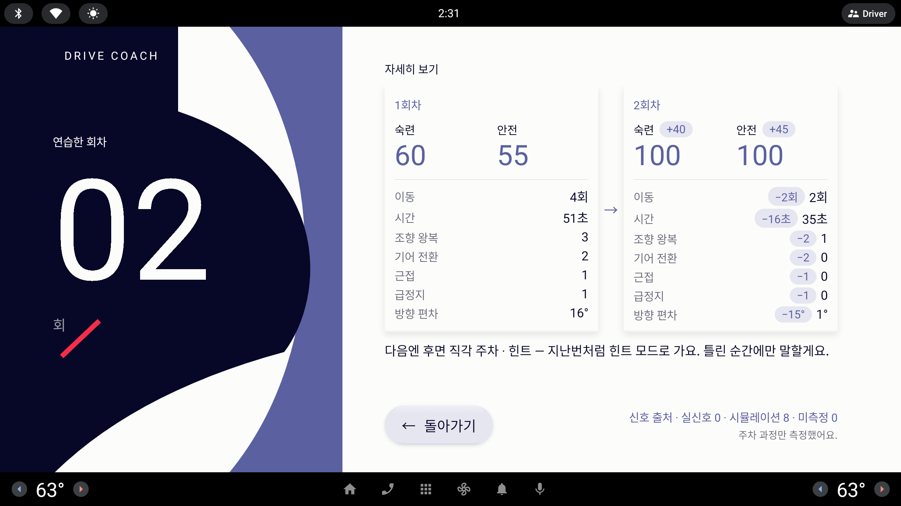

자세히 보기 — 지표 줄바꿈과 신호 출처 자리
리포트 "자세히 보기"의 카드 안 지표 줄이 폭을 넘어 숫자 하나가 다음 줄로 떨어지고, 아래 고정 "신호 출처" 블록이 카드 높이를 눌러 잘린 느낌을 준다. 지표 배치와 신호 출처 자리를 함께 고친다.


- 이동4회
- 시간44초
- 조향 왕복3
- 기어 전환2
- 근접1
- 급정지1
- 방향 편차17°
- 이동−22회
- 시간−15초29초
- 조향 왕복−21
- 기어 전환−20
- 근접−10
- 급정지−10
- 방향 편차−15°2°
주차 과정만 측정했어요.
- 이동4회
- 시간44초
- 조향 왕복3
- 기어 전환2
- 근접1
- 급정지1
- 방향 편차17°
- 운전석 도어 — 미측정이 있을 때의 예(이 세션은 미측정 0)미측정
- 이동−22회
- 시간−15초29초
- 조향 왕복−21
- 기어 전환−20
- 근접−10
- 급정지−10
- 방향 편차−15°2°
- 운전석 도어 — 미측정이 있을 때의 예(이 세션은 미측정 0)미측정
검토 의견 — 신호 출처가 꼭 필요한가
리포트 요약에는 반드시, 하위 페이지에는 작게. "무엇이 실신호이고 무엇이 시뮬레이션인지 화면·리포트에 정직하게 구분해 보여 준다"는 이 앱의 핵심 원칙이자 심사에서 설명할 포인트라서, 세션이 끝나고 처음 보는 리포트 요약 페이지에서는 지금 크기의 블록을 그대로 둔다. 특히 사내 에뮬에서는 같은 화면이 "실신호 7 · 시뮬레이션 1"로 바뀌는데, 그 장면이 사외 Fake 빌드와의 차이를 한눈에 증명하는 자리다.
반면 자세히 보기·진단서는 요약에서 한 번 더 들어온 하위 페이지라 이미 출처를 본 뒤이고, 여기서 출처가 하는 일은 "이 숫자들이 어떤 신호에서 왔는지"를 잊지 않게 하는 것뿐이다. 그 역할은 눈썹 크기 한 줄로 충분하고, 카드에 돌려준 높이가 지표 줄바꿈 문제를 구조적으로 없앤다. 완전히 빼는 C 는 미측정이 0일 때 흔적이 사라져 원칙이 페이지마다 달라지므로 권하지 않는다. 그래서 B — 요약은 그대로, 하위 페이지는 한 줄 — 를 추천한다.
신호 출처가 자세히 보기에 남아 정직성 원칙과 사내 검증 장면을 지키면서도 한 줄로 줄어, 카드가 지표 일곱 줄을 한 줄씩 쓸 만큼 넉넉해진다 — 줄바꿈과 잘린 느낌이 함께 해결된다.
리포트 요약의 블록은 지금 크기 유지. 카드 지표는 라벨/값 목록(라운드 21 선택안과 같은 부품)으로 통일하고, 진단서 페이지도 같은 한 줄 규칙을 쓴다.